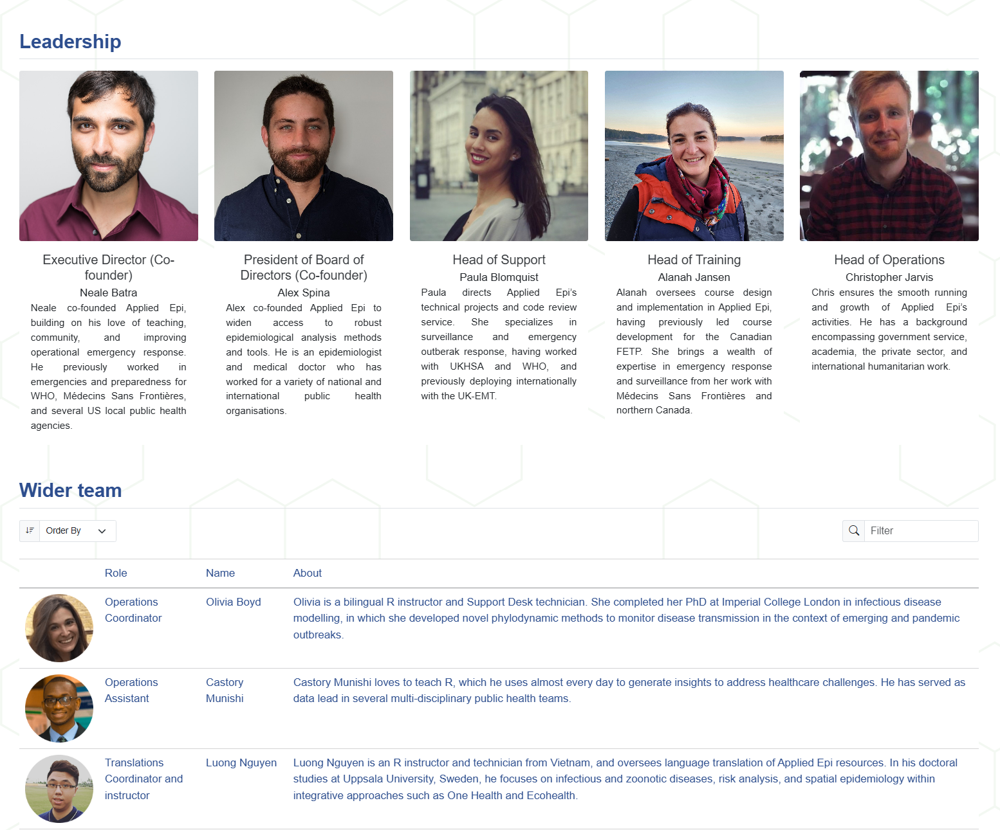
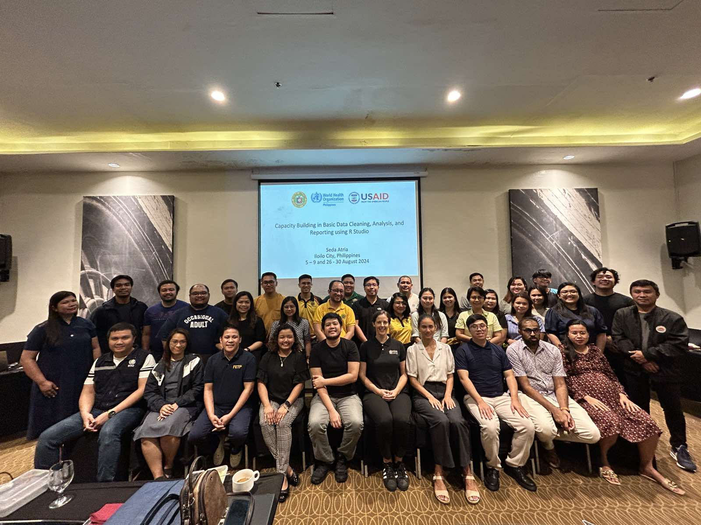

Curriculum Vitae
Education
Uppsala University
Doctoral degree in Global Health Oct 2021 – Oct 2025
- Doctoral degree in Global Health
- Thesis: Bridging the gap: Leveraging the sustainability agenda to inform policies and actions on drivers of antimicrobial resistance
University of Liège
Specialized Master in Integrated Management of Health Risks in the Global South Sep 2020 – Sep 2021
- Graduated with highest honor (summa cum laude)
- Thesis: Operationalization and measurement of organizational adaptability: experiences from FRIENDSHIP, a non-governmental organization adapting to COVID-19 pandemic in Bangladesh

Hanoi Medical University
Bachelor of Public Health Sep 2013 – Sep 2017
- Graduated with high honor
- Graduation thesis: 9.5/10
Professional Experience
Uppsala University
PhD student, Center for Health and Sustainability Oct 2021 – Oct 2025
- PhD project: Analyzed the degree to which factors driving antimicrobial resistance (AMR) development and spread are addressed by AMR-specific policies and interventions versus broader societal approaches, particularly the Sustainable Development Goals (SDGs) agenda.
INFLUX project (ERC grant No. 101039376): Contributed to research investigating and establishing database of drivers responsible for the emergence of emerging pests and pathogens, assessing governmental responses and their cascading social-ecological effects.
SUSTAIN project: Conducted statistical analysis to evaluate the effectiveness of bundled healthcare interventions targeting health workers in Nepal, aimed at enhancing neonatal care quality
Teaching: Delivered a lecture on the “Planetary Health” course for the Master’s Program in Implementation, Transformative Learning and Sustainability at Uppsala University and presented a guest lecture on R programming for assessing climate impact on health outcomes at the University of Gothenburg.
Supervision: Co-supervised an MSc student at Karolinska Institutet on the project: Observational Ecological Study on Global Data Availability of Antibiotic Resistance Drivers: Identifying Gaps in Data Collection
Epistat AB
Intern Apr 2025 – Present
- Cardio project: Contributing to the development of the Statistical Analysis Plan (SAP), designing mock shells, and supporting data analysis

Applied Epi
Instructor, Coordinator Jun 2021 – Present
Instructor: Provide R trainings for many epidemiologists worldwide. Provide public health services support including mentorship, outbreak response to AppliedEpi partners (i.e. Doctors Without Borders – MSF, Australian National University, WHO Philippines)
Translation Coordinator: Maintain translation packages and educational resources, including the Epi R Handbook (available in 10 languages), Epi Julia Handbook, slides, and tutorials
Co-Author of Applied Epidemiology Manual (on-going project)
Lead translator the Vietnamese version of R for applied epidemiology and public health


Hanoi University of Public Health
Research Assistant, Center for Public Health and Ecosystem Research Jul 2018 – Jul 2020
Supported three research projects on sanitation, food safety, and disease prevention in Vietnam, focusing on light-touch interventions in pig farms, parasite prevalence in ethnic communities, and assessing disease risk factors at the human-animal-environment interface, including biosecurity practices, animal movement, human-animal contact, and antimicrobial resistance
Main responsibilities included:
- Participated in the design, monitoring, and evaluation of interventions
- Assisted in collecting samples in field and preparing samples at laboratory
- Collected and analyzed data, wrote reports and manuscripts for publication
- Conducted risk communication campaigns about food-borne diseases and food safety
- Conducted project administrative tasks, i.e. contacting with local & international partners, applying ethical approval

Communities and Organizations
AVSE Global - Medical Translational Research Network
 The Association of Vietnamese Science and Technology Experts in Sweden (AVISE)
The Association of Vietnamese Science and Technology Experts in Sweden (AVISE)

Publication
Link to my Google Scholar profile (14 peer-reviewed, h-index: 8, i10-index: 5, total number of citations: 135)
Selected 5 articles:
Luong NT, Didier W, Mats M, Peter SJ (2025). ‘When global health meets global goals’: assessing the alignment between antimicrobial resistance and sustainable development policies in 10 African and Asian countries. BMJ Global HealthPeter SJ,
Luong NTand 10 co-authors (2024). Association between national action and trends in antibiotic resistance: an analysis of 73 countries from 2000 to 2023. PLOS Global Public HealthLuong NT, Didier W, Mats M, Tiscar G, Peter SJ (2024) Characterizing proximal and distal drivers of antimicrobial resistance: An umbrella review. Journal of Global Antimicrobial ResistanceNgo HTH,
Nguyen TL, and 6 co-authors (2021). Microbial contamination and associated risk factors in retailed pork from key value chains in Northern Vietnam. Food MicrobiologyLam S, Huyen NTT, Ngo HTH,
Nguyen TL, and 6 co-authors (2021). Unpacking the Theory Behind One Health Food Safety Programs: A Vietnam Case Study. Frontiers in Veterinary Science
Academic events attendance
- 2024 Oral presentation: The Nordic AMR Centre Conference, Tromsø, Norway
- 2023 Poster presentation: EAR LTC-Sarea-ENLIGHT CONGRESS “Strengthening Antibiotic Resistance Networks”, Bordeaux, France
- 2023 CIRCUS’ Interdisciplinary Summer School, Uppsala, Sweden
- 2022 MIRAI 2.0 Research and Innovation week 2022, Fukuoka, Japan
- 2022 NorDoc PhD Summit and summer school, Bergen Norway
- 2022 SweDev PhD conference, Gothenburg, Sweden
- 2019 Poster presentation: 13th SafePork 2019: One Health – Tear down interdisciplinary wall” conference, Berlin, Germany
- 2019 Poster presentation: Regional symposium on research into smallholder pig production, and pork safety, Hanoi, Vietnam
Skills
Professional skills
- Global Health & Sustainability research methodologies: Solid expertise in evidence synthesis and system scoping, with experience applying LLMs to systematic reviews and meta-analyses, health policy analysis, qualitative content analysis, comparative case study analysis, participatory modelling, knowledge co-production, household surveys, data collection (including in-depth interviews, focus group discussions), and risk communication.
- Statistical & Machine Learning frameworks: Extensive experience with generalized regression models, time series analysis, spatial statistics and data visualization, clustering techniques, network analysis, natural language processing and large language models applications. Familiar with advanced statistical models (GAMs, SEMs, Bayesian statistics, High-performance computing).
- Laboratory techniques & Field Data Management: Familiar with laboratory microbiological and molecular techniques including Salmonella isolation, Total Bacteria Count, ELISA and PCR. Proficiency in field/clinical data management using Open Data Kit (ODK) and RedCap
- Programming & Data Engineering: Advanced proficiency in using programming language for statistical analysis (R, Python, STATA), product communication (R Markdown, Quarto, Shiny and Power BI), database management & query (SQL), version control (Git, Github Action, Docker), package development, web framework (HTML, CSS, JS, WordPress).
- Project Management: Budget planning, M&E skills, proposal writing, and interdisciplinary project coordination.
Personal skills
- Interdisciplinary, adaptability, organized, independent, innovative, optimistic, constructive
Languages
- Vietnamese, English, Swedish